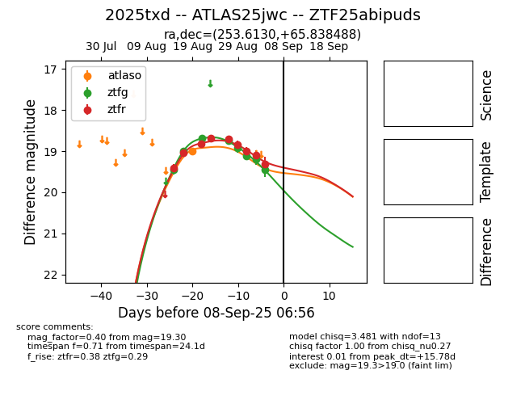

Target 2025txd at 2025-08-28 06:52, see:
FINK: fink-portal.org/ZTF25abipuds
Lasair: lasair-ztf.lsst.ac.uk/objects/ZTF25abipuds
ALeRCE: alerce.online/object/ZTF25abipuds
TNS: wis-tns.org/object/2025txd
YSE: ziggy.ucolick.org/yse/transient_detail/2025txd
alt names
ZTF25abipuds (ztf,fink)
2025txd (tns,yse)
ATLAS25jwc (atlas)
coordinates:
equatorial (ra, dec) = (253.6130,+65.83849)
galactic (l, b) = (96.5761,+36.44235)
photometry
last atlaso=19.00, ztfg=18.74, ztfr=18.71
1 atlaso, 4 ztfg, 5 ztfr detections
